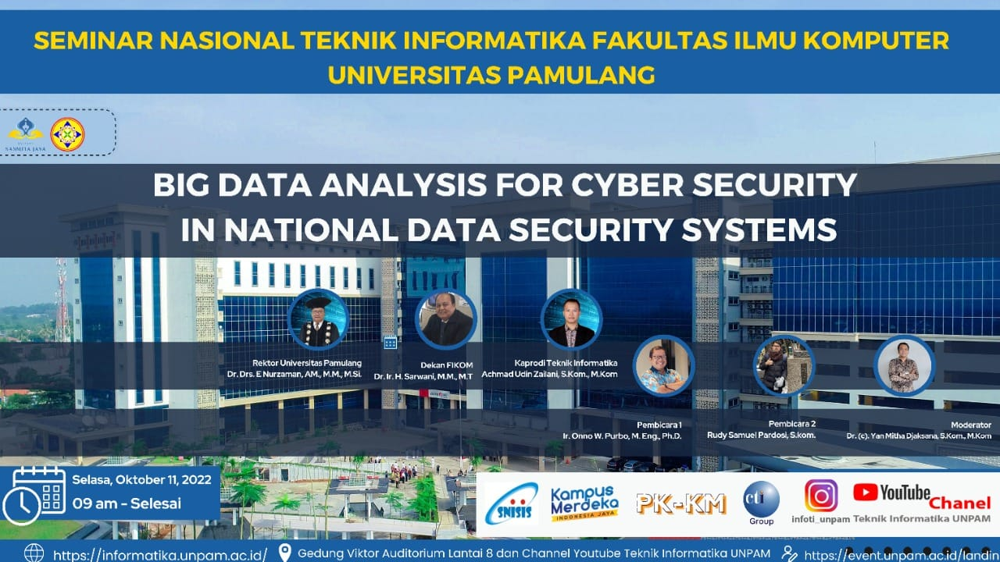
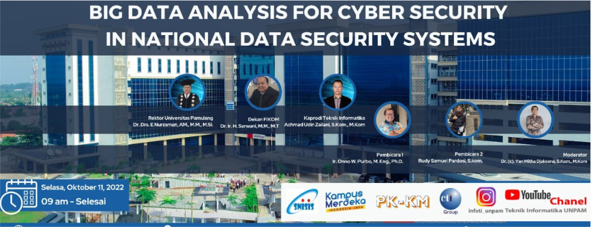

Seminar Nasional dengan Tema Big Data Analysis For Cyber Security In National Data Security System

Pada era globalisasi saat ini perkembangan teknologi informasi dan komunikasi terjadi secara cepat
, tidak terkecuali dalam bidang pendidikan. Oleh karena itu, perlu ada upaya untuk mempercepat
pembelajaran mengenai teknologi informasi dan komunikasi. Memperkenalkan sejak dini kepada anak-anak
usia sekolah dasar merupakan salah satu upaya mempercepat pembelajaran mengenai teknologi informasi
dan komunikasi. Dalam upaya berkontribusi memberikan pembelajaran mengenai teknologi dan informasi
kepada anak-anak sekolah dasar, maka pada hari Sabtu, 24 September 2022 Mahasiswa Program Studi Teknik
Informatika Universitas Pamulang yang beranggotakan Hendra Bagus Setiawanto, Haliza Musdalifa, Salsa
Juliani Nuryadin, Dyllan Nicholas Nathaniel, Michel Olivia Diaz, Mochammad Zakaria Saputra, Fairuz
Syifa Khaerunnisa, Arif Cahya Dito, Adam Albana, dan Hiqmal Panca Padli serta Dosen pendamping Bapak
Suryaningrat, S.Kom,. M.Kom. mengadakan kegiatan Pengabdian Kepada Masyarakat dengan tema Pelatihan
dan Pengenalan Dasar Microsoft Office Word pada Siswa SDN Tenjo 1. Selain sebagai pelaksanaan Tri
Dharma Perguruan Tinggi, tujuan dari kegiatan ini adalah untuk mengenalkan dan memberikan pengetahuan
dasar-dasar pengoperasian Microsoft Office Word. Dengan demikian diharapkan para siswa SDN Tenjo 1
mendapatkan ilmu dasar Microsoft Office Word yang bisa mereka gunakan untuk mengerjakan tugas-tugas
sekolah maupun kebutuhan lainnya dalam kehidupan sehari-hari mereka

Kegiatan ini dilakukan di SDN Tenjo 1 yang beralamatkan di Kelurahan Tenjo, Kecamatan Tenjo, Kabupaten
Bogor dengan peserta pelatihannya adalah siswa-siswi kelas 6 yang terdiri dari 28 siswa. Acara dilaksanakan
pukul 10.30 – 12.30 WIB dimulai dengan pembukaan oleh Kepala Sekolah SDN Tenjo 1 yang di hadiri oleh para
peserta pelatihan, para guru SDN Tenjo 1 dan para Mahasiswa serta Dosen Pendamping Pengabdian Kepada
Masyarakat. Pada sambutannya Drs. Warso selaku Kepala Sekolah SDN Tenjo 1 mengucapkan terima kasih banyak
karena kegiatan Pengabdian Kepada Masyarakat ini adalah yang pertama kalinya dilaksanakan di sana, dan
materi yang di sampaikan sesuai dengan kebutuhan saat ini yaitu tentang teknologi informasi. Setelah acara
pembukaan dilanjutkan dengan acara inti yang penyampaian materi tentang dasar-dasar Microsoft Office Word
kepada para siswa kelas 6. Mereka sangat antusias dalam mengikuti materi yang diberikan oleh para mahasiswa.
Selain penyampaian materi kami juga melakukan praktek agar mereka dapat secara langsung bagaimana cara-cara
mengoperasikan perintah-perintah yang ada pada Microsoft Office Word. Untuk menghindari kebosanan peserta
saat mengikuti kegiatan, maka kami menyelipkan beberapa games dan doorprize di tengah acara.
Pukul 12.30 WIB tibalah waktunya kami untuk mengakhiri kegiatan Pengabdian Kepada Masayrakat. Alhamdulillah
semua acara berjalan dengan baik dan lancar. Kami mengucapkan terima kasih banyak kepada pihak SDN Tenjo 1
dan semoga ilmu yang kita sampaikan bisa bermanfaat.
PENANGGUNG JAWAB BERITA/KEGIATAN : Hendra Bagus Setiawanto dan Suryaningrat, S.Kom,. M.Kom.